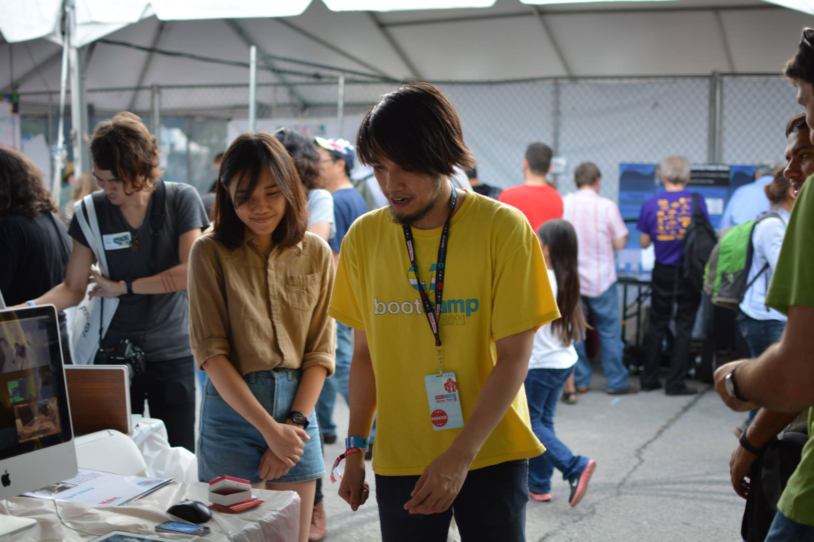
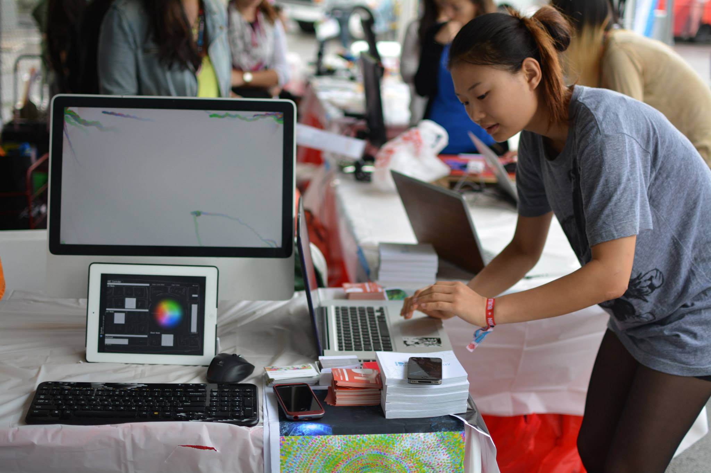

<div class="row">


	<div class="fr-work-text col-xs-12 col-md-4 col-md-push-8">
		<h3>{{page.title}}</h3>
		<h5>{{page.year}}</h5>
		<h6>{{page.tags}}</h6>
		{% if page.collab %}
		<h6> in collaboration with {{page.collab}}</h6>
		{% endif %}
		  
		<p>
			Fuse VJ is interactive environment that extends gestural movements of the dancer and translate it into dynamic visual output. The phone is attached to the dancer and feed live data to the Computer. While the VJ curate between modes of how those data are translated to match the music through iPad. This dynamic creates collaborative visual performance that is fun, engaging and visually stunning. 
		</p>
		<p>
			Featured in Maker Faire 2013
		</p>
		<p>
			The project is written in OpenFrameworks (C++) for iOS and OS X.
		</p>

	</div>


	<div class="fr-work-img col-xs-12 col-md-8 col-md-pull-4">  

		

		<div class="flex-video widescreen">
			<iframe width="560" height="315" src="//www.youtube.com/embed/_9gu6qcVlvI" frameborder="0" allowfullscreen></iframe>
		</div>

		<div class="flex-video widescreen">
			<iframe width="560" height="315" src="//www.youtube.com/embed/Lwz3TsKtmyE" frameborder="0" allowfullscreen></iframe>
		</div>

		<div class="flex-video widescreen">
			<iframe src="//www.youtube.com/embed/2NH_dDfS4Dg" frameborder="0" allowfullscreen></iframe>
		</div>

		<div class="flex-video widescreen">
			<iframe width="560" height="315" src="//www.youtube.com/embed/PbsqBkAREJc" frameborder="0" allowfullscreen></iframe>
		</div>

		
		
		
		
		
		
		
		
		
		<div class="flex-video widescreen">
			<iframe width="560" height="315" src="//www.youtube.com/embed/-lRoB_BlK8w" frameborder="0" allowfullscreen></iframe>
		</div>
	</div>


</div>
{% include worktile.html %}